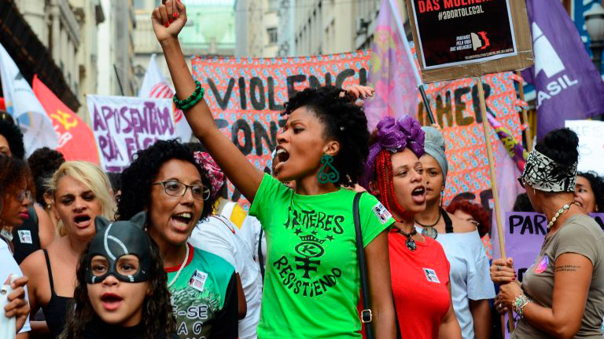

A igualdade de gênero é um princípio fundamental para a construção de uma sociedade mais justa, onde homens, mulheres e pessoas de diferentes identidades de gênero tenham os mesmos direitos, oportunidades e tratamento. Pensando nisso, o Isonomy disponibiliza informações acessíveis que ajudam a combater preconceitos, estereótipos e diferentes formas de discriminação.
Um dos principais recursos do site é a seção de conscientização, que apresenta conteúdos como: artigos e materiais informativos sobre igualdade de gênero, direitos humanos e inclusão. Esses conteúdos têm como objetivo ampliar o conhecimento dos usuários e incentivar reflexões sobre a importância do respeito às diferenças.
O site também conta com uma área de notícias, onde são divulgadas informações atualizadas sobre acontecimentos, pesquisas, campanhas, projetos e iniciativas relacionadas à igualdade de gênero. Dessa forma, os usuários podem acompanhar os principais debates e avanços sobre o tema.
Além disso, o Isonomy oferece uma seção de eventos, que reúne informações sobre palestras, seminários, workshops, campanhas e outras atividades voltadas à promoção da igualdade de gênero. Esses eventos incentivam a participação da comunidade e fortalecem o debate sobre a construção de uma sociedade mais inclusiva.

Outro destaque da plataforma é a área de emergência, destinada a orientar pessoas que estejam enfrentando situações de violência, discriminação ou outras circunstâncias que exijam apoio imediato. Nesse espaço, os usuários podem encontrar informações e direcionamentos para buscar ajuda de forma segura.
Outro destaque da plataforma é a área de eventos, que reúne informações sobre palestras, seminários, workshops, campanhas e outras atividades voltadas à promoção da igualdade de gênero. Esses eventos incentivam a participação da comunidade e fortalecem o debate sobre a construção de uma sociedade mais inclusiva.